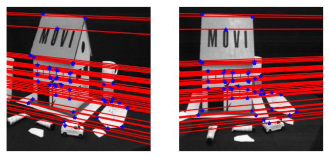

Assignment 4 · Multi-view geometry
From image matches to 3D structure
Four steps connect corresponding image points to camera geometry: estimate the fundamental matrix, rectify a stereo pair, factor an affine measurement matrix, and triangulate a multi-view statue reconstruction.
Part 1 · Fundamental matrix
Correspondences constrain epipolar lines
For matched homogeneous points, the fundamental matrix satisfies p2TFp1 = 0.
Linear least-squares eight-point algorithm
I build the eight-point design matrix from the correspondences, solve for its nullspace with SVD, and enforce rank two by setting the smallest singular value of F to zero. I normalize the resulting matrix to unit Frobenius norm to fix its arbitrary scale.
set1

set2

For both sets, the raw-coordinate LLS estimates have substantially larger mean point-to-line distances than the normalized estimates. This is consistent with the unnormalized system being more sensitive to measurement noise and numerical conditioning.
Normalized eight-point algorithm
I translate each point set to its centroid and scale its mean distance to √2. I solve the normalized system with the eight-point algorithm, enforce rank two by SVD, and denormalize the result using F = T2TFnorm T1. I then enforce rank two again and normalize F to unit Frobenius norm.
set1

set2

Across both datasets, the normalized epipolar lines pass close to the matched points, consistent with the smaller mean point-to-line distances reported below.
Mean point-to-epipolar-line distances
For each correspondence pair, let p1 be the point in the first image and
p2 its match in the second image. In
compute_distance_to_epipolar_lines(), we used the match to form the epipolar line in the
first image as
l1 = FTp2, and the line in the
second image as l2 = Fp1. I convert each
homogeneous image point to pixel coordinates by dividing by its third coordinate. For a line
l = (a, b, c)T and image point
(x, y), the function computes the per-match perpendicular distance
d in pixels as:
For each image direction, the function returns the mean of these per-match distances over all correspondences, d̄ = (1/N) ∑i=1N di. The table reports these means.
| Data set | Method | Image 1 mean distance | Image 2 mean distance | Maximum |p2TFp1| |
|---|---|---|---|---|
| set1 | LLS | 28.03 px | 25.16 px | 0.6635 |
| set1 | Normalized | 0.89 px | 0.83 px | 0.2066 |
| set2 | LLS | 9.70 px | 14.57 px | 0.2054 |
| set2 | Normalized | 0.89 px | 0.89 px | 2.9200 |
Across both datasets, normalization reduces the directional mean distances to 0.83–0.89 px, compared with 9.70–28.03 px for LLS, indicating a much closer fit of the epipolar lines to the matched points.
Maximum algebraic residual
For each homogeneous correspondence pair, I compute the absolute epipolar constraint value. The table reports the largest value across the N pairs:
This residual measures algebraic constraint satisfaction, not pixel distance, and its magnitude depends on the scale chosen for F.
Part 2 · Image rectification
Make corresponding epipolar lines horizontal
The epipoles are null vectors: e1 in the first image satisfies Fe1 = 0, and e2 in the second image satisfies FTe2 = 0.
To build H2, I use three simple transformations. First, T moves the image center to the origin. Next, R rotates the epipole onto the horizontal axis; the sign α chooses the rotation direction. Then G sends the epipole from (f, 0, 1) to the horizontal point at infinity (f, 0, 0). Combining these transformations gives:
To build the matching homography, we used:
Because the epipolar lines are horizontal, the matching transform keeps the vertical coordinate fixed and adjusts the horizontal coordinate. For each transformed point (x, y), we fit the rule below to the horizontal coordinate of its match in image 2. Least squares chooses a1, a2, and a3 to minimize the total squared difference across all correspondences; these values form the first row of HA:
We then form:
For set1, the epipoles are approximately e1 = (−1300.79, −142.66, 1) and e2 = (1654.22, 45.43, 1). The transformed fundamental matrix has the expected horizontal-epipolar form, as shown in the rectified pair below.

Rectification makes it easier to find corresponding points in the two images because it makes the epipolar lines horizontal. After locating a point in one image, we only need to search along the matching horizontal scanline in the other image instead of across the whole image.
Part 3 · Factorization
Recover affine shape and camera motion
Factorization method implementation
1. Center and factor the measurements
I center each row of the four-row measurement matrix, then use SVD and keep the three largest singular components. This gives the initial rank-three motion and structure factors.
2. Solve the metric constraints
For each of the two views, I use the camera-row unit-length and orthogonality constraints to solve for the six independent entries of the symmetric metric matrix A = QQT.
3. Select and apply the metric upgrade
When the constraints leave a one-dimensional nullspace, I choose a positive-definite solution with a low condition number, without using ground truth. I factor it with Cholesky when possible; otherwise, I floor small eigenvalues to obtain a usable upgrade. I then update motion with Q and structure with Q−1.
For these two views, the metric-constraint matrix has numerical rank five, so the upgrade is not unique. Choosing a well-conditioned positive-definite solution along the remaining null direction is a practical heuristic.
Full-set comparison to ground truth
For the full set, the factorized point cloud captures the broad 3D arrangement of the ground truth. The two clouds are not plotted in a shared coordinate frame, so their orientation and scale need not match directly; the factorization is inherently ambiguous up to a global similarity transform. Any remaining differences after accounting for that transform come from measurement noise and the approximate metric upgrade.

Full-set singular values
The measurement matrix has four rows because it stacks the x- and y-coordinates from each of two images, so measured data can have up to four nonzero singular values. The full set has four nonzero values. In the ideal affine orthographic model, the matrix factors as motion times 3D structure, so its rank is at most three and its fourth singular value is zero. Noise and departures from ideal orthographic projection make the measured fourth value nonzero.
| Correspondence set | Centered measurement-matrix singular values |
|---|---|
| set1 (37 points) | 959.5852, 540.4761, 184.4317, 27.9152 |
Subset reconstruction
The sfm affine ambiguity problem note distinguishes the minimum point geometry from practical
stability: four non-coplanar
points are needed for a centered point cloud to span 3D, while additional well-distributed points and
camera views improve robustness. Our two-view subset has 18 points, but its ground-truth points are
nearly planar: the singular values of its centered 3D coordinates are approximately
17.28, 14.18, 0.38. Its small depth spread makes the recovered depth especially
sensitive to noise, which explains why its shape does not align as well by eye as the full set.
This is not just a global rotation or scale difference.

Subset singular values
All four subset values are smaller than those for the full set, in part because the subset has fewer points. More importantly, its third and fourth values are much closer relative to each other (σ4/σ3 = 0.71, versus 0.15 for the full set), so the rank-three approximation is less clearly separated from the discarded component.
| Correspondence set | Centered measurement-matrix singular values |
|---|---|
| set1 subset (18 points) | 264.5440, 210.0607, 7.2192, 5.1286 |
Part 4 · Structure from motion
Choose camera pose, triangulate, refine
The essential matrix gives two possible rotations and two translation directions, making four pose candidates. For each candidate, DLT uses the matched image coordinates and camera matrices to solve for a 3D point. We select the pose for which the largest number of points have positive depth in both camera frames.
To refine a DLT point, I project it back into each image and subtract the observed image coordinates; these differences are the reprojection errors. The Jacobian describes how those errors change when the 3D point moves slightly. Gauss–Newton uses the errors and Jacobian to update the point, reducing the reprojection error over up to ten iterations.
| Check | Result |
|---|---|
| Linear 3D point difference from expected point | 0.00292 (sum of absolute coordinate differences) |
| Reprojection-error implementation difference | 8.30 × 10-7 |
| Jacobian implementation difference | 1.82 × 10-8 |
| Unit-test reprojection error, linear estimate | 98.74 |
| Unit-test reprojection error, nonlinear estimate | 95.59 |

A house is harder to reconstruct because it covers more area and depth than the statue, so images may share fewer visible points. Repeated features such as similar windows can cause incorrect matches, while occlusion can break a point track between views. Larger viewpoint changes also make matching and triangulation less reliable, and small camera-pose errors can accumulate into drift across the scene. The larger number of views and point tracks also increases computation.
Takeaway
Reliable matches support reliable 3D
Normalizing image points greatly improves the fundamental-matrix fits, and rectification reduces correspondence search to a horizontal scanline. Factorization and projective triangulation then use matches across views to estimate 3D structure, but their results remain sensitive to point distribution, camera geometry, and tracking errors. Larger scenes need broad viewpoint overlap and reliable tracks to limit mismatches and pose drift.
References & implementation
- SYDE 671 Assignment 4, adapted from Stanford CS231A.
- sfm affine ambiguity problem syde671
- Tomasi-Kanade Factorization: Affine Ambiguity in Structure from Motion
- Tomasi and Kanade, “Shape and Motion from Image Streams under Orthography: a Factorization Method.”
- Hartley and Zisserman, Multiple View Geometry in Computer Vision.